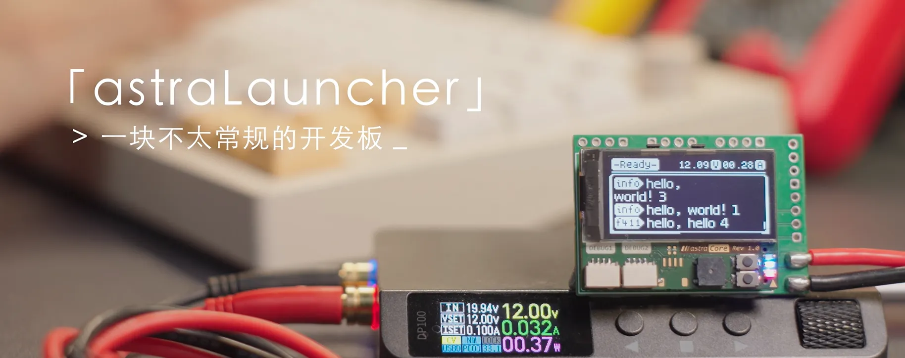
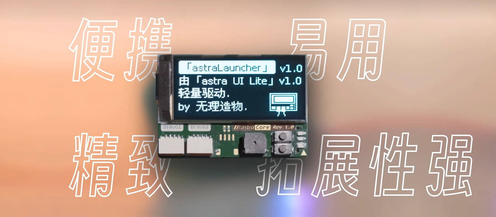
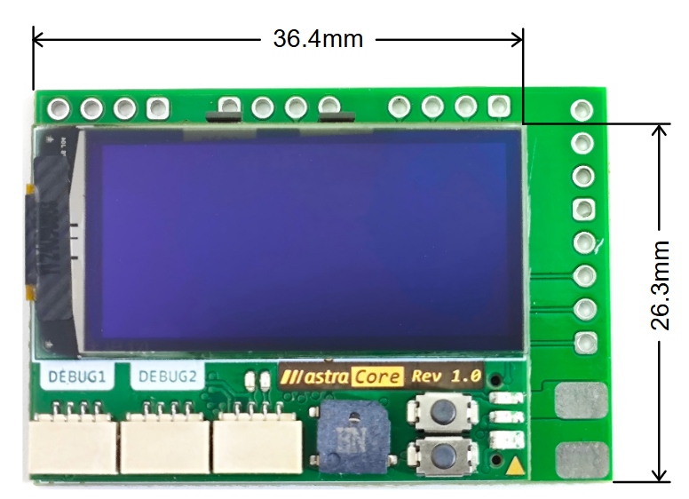
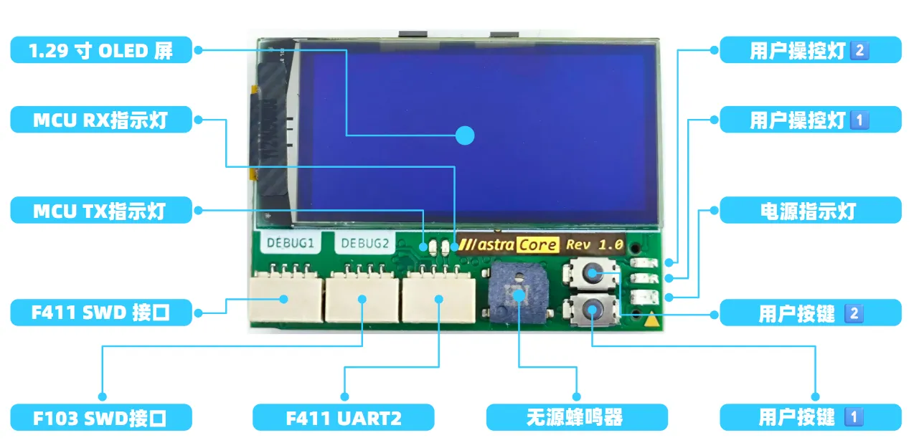
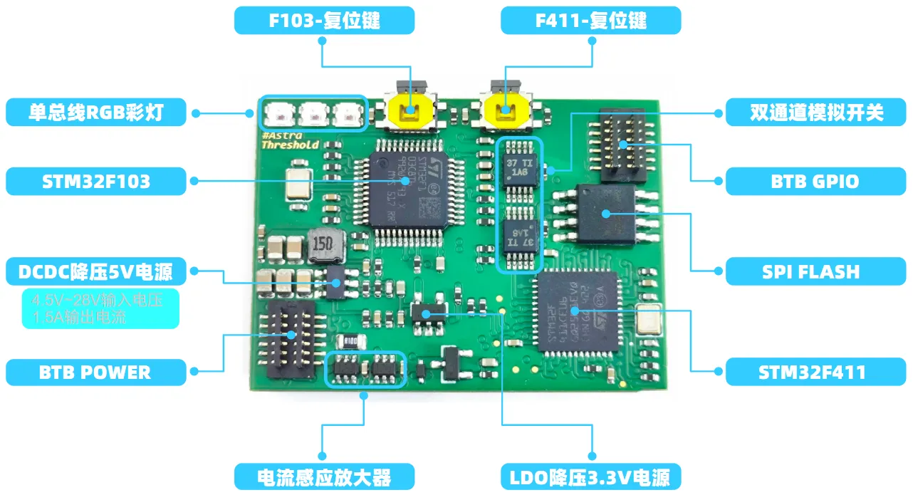
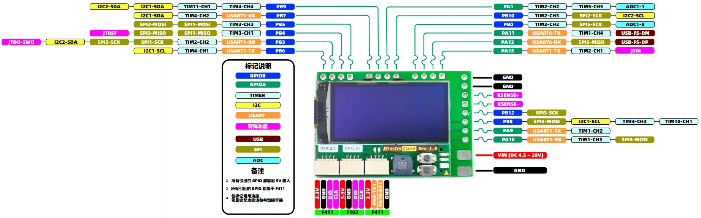

手册介绍
astraLauncher 开发板

一板双MCU
STM32F103C8T6 搭载 oled-ui-astra-lite 固件，精美 UI 监测开发板状态收发 F411 和外部串口信息
STM32F411CEU6 用户自定义开发，通过扩展板引出IO，也可控制屏幕学习UI
功耗自检测
板载传感器，通过主控 F103 UI 显示监测整板电压 \ 电流 \ 功耗状况
为什么用它作为案例？
如何便携？
核心板仅 36.4 x 26.3 mm

为何精致？


怎么易用？
将根据其制作入门手册：
| 序号 | 章节名称 | 知识 |
|---|---|---|
| 1 | 环境搭建 | 软件的安装、工程的创建、代码下载 |
| 2 | GPIO使用 | GPIO介绍、引脚输出功能介绍及使用、引脚输入功能介绍及使用 |
| 3 | 时钟与延时 | 主控时钟介绍与主频配置、常用延时方法介绍和使用方法 |
| 4 | 外部中断 | 中断的概念、主控的中断介绍、引脚的外部中断功能使用 |
| 5 | 串口通信 | 串口通信介绍、主控的串口介绍、开发板的串口通过下载器的串口功能与电脑进行的数据传输和接收实验 |
| 6 | 定时器 | 定时器的概念、主控的定时器介绍、实现定时的让灯交替闪烁的功能 |
| 7 | PWM输出 | 什么是PWM、主控的PWM功能介绍、通过PWM输出频率可变、占空比可变的方波 |
| 8 | 输入捕获 | 概念介绍、主控的硬件介绍、采集外部信号的边缘或电平，实现外部信号的频率和占空比的识别 |
| 9 | ADC采集 | 概念介绍、主控的硬件介绍、通过ADC功能采集外部电压换算并输出 |
| 11 | DMA传输 | 概念介绍、主控的硬件介绍、通过DMA功能将ADC采集到的数据直接搬运到内存中 |
| 12 | I2C协议 | 概念介绍、主控的硬件介绍、通过I2C设备姿态传感器实现数据互传功能 |
| 13 | SPI协议 | 概念介绍、主控的硬件介绍、通过SPI设备W25Q32内存芯片，实现数据存储与读取 |
为什么扩展性强？

双 MCU 性能特性
双 MCU 性能特性说明
STM32F103C8T6
STM32F411CEU6
- Arm® 32-bit Cortex®-M3 CPU
- 最高达 72MHz 主频
- 64KB FLASH, 20KB SRAM
- 4 timer & 4*4 pwm-ch, 2 spi, 2 i2c, 3 usart, 1 usb, 1 can, 10 adc-ch
- Core: ARM® 32-bit Cortex®-M4 CPU
- 最高达 100MHz 主频
- 512KB FLASH, 128KB SRAM
- 8 timer & 8*4 pwm-ch, 5 spi/i2s, 3 i2c, 3 usart, 1 sdio, 1 usb, 10 adc-ch